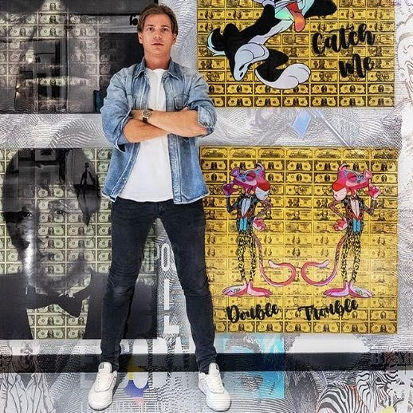
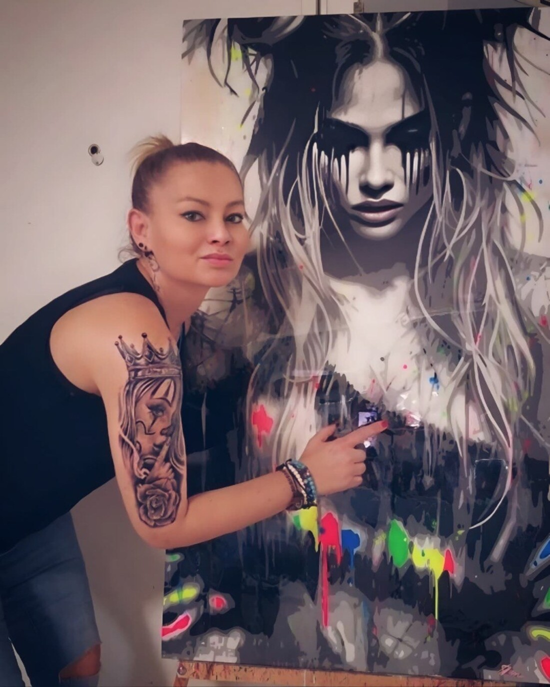
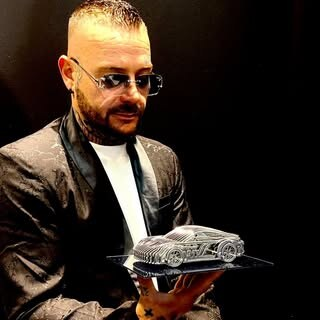
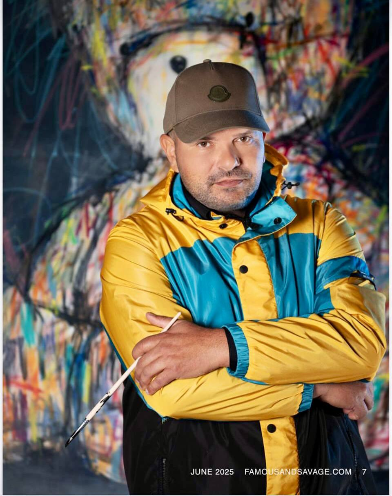
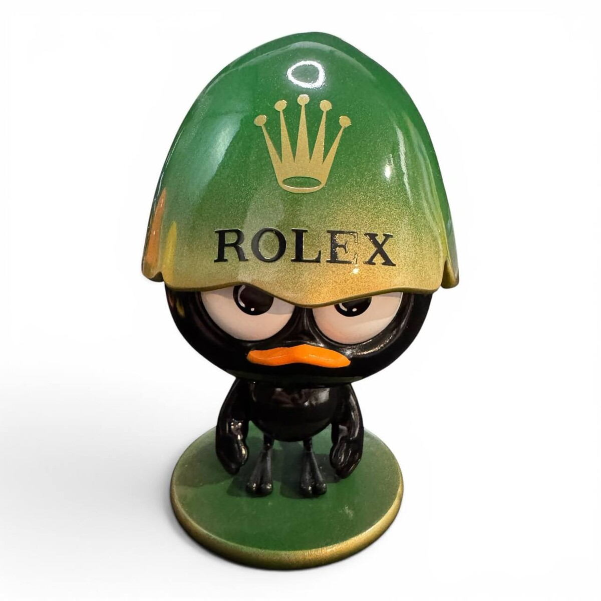
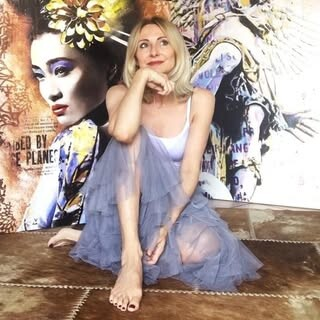
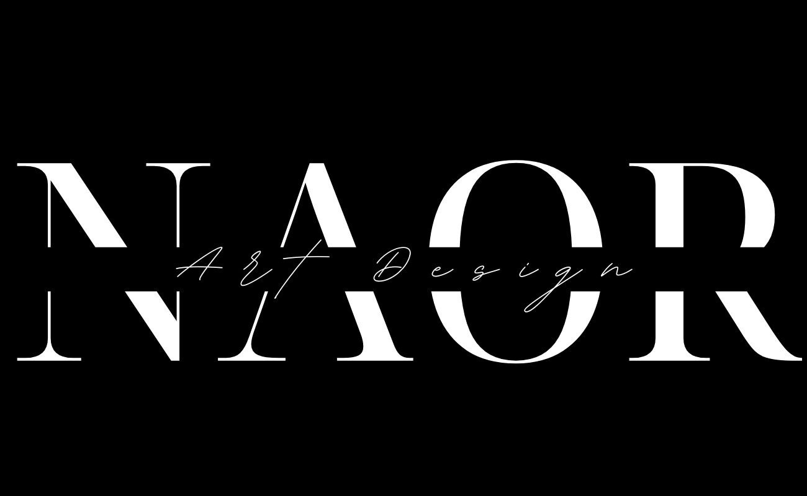

Италия
Анджело Аккарди
Angelo Accardi
Ироничные и сюрреалистичные городские пейзажи современной жизни.
23 работ →
Италия
Антонио Тамбурро
Antonio Tamburro
Фигура в движении: белое, синее, золото и охра.
2 работ →
Нидерланды
ван Эппл
van Apple
Цифровое mix-media искусство: поп-культура, комиксы, лимитированные серии.
30 работ →
Франция
Джули Жалер
Julie Jaler
Гиперреалистичные скульптуры-конфеты из смолы в мотивах люксовых домов.
20 работ →Россия
Dmitry DYU
Dmitry DYU
Дизайнерские арт-игрушки Dyu Toys: каждая фигура — дух-оболочка, оживающая через владельца.
Скоро →
Италия
Дэн Фако
Dan Faco
Поп-арт и экшн-пейнтинг: смола, фактуры, символы поп-культуры как эмоциональные карты.
Скоро →
Франция
Жан-Франсуа Пьекур
Jean-François Piécourt
Французский скульптор на стыке искусства и дизайна.
Скоро →
Франция
KIKO
KIKO
Экспрессивные портреты из цветных росчерков — на грани абстракции и фигуратива.
7 работ →
Франция
Le Marquis
Le Marquis
Скульптуры-фигурки героев детства, переосмысленные с юмором и в духе люкс-брендов.
Скоро →
Россия
Максим Башев
Maxim Bashev
Художник-гуманист: авангард, смешанная техника, фотопортрет в живописи.
14 видео-работ →Италия
Мауро Папарелла
Mauro Paparella
Живопись на стыке с цифровыми медиа: идентичность, душа, современное общество.
Скоро →
Италия
Милена Б.
Milena B.
Поп-арт со стрит-настроением: иконы кино, музыки и поп-культуры.
Скоро →
Франция
NAOR
NAOR
Поп-арт-скульптуры из смолы: символы люксовых брендов и ирония над консюмеризмом.
Скоро →
Бельгия
Рафаэль Вандерхаген
Raphaël Vanderhaegen
Личная история и преодоление прошлого как источник стиля.
Скоро →